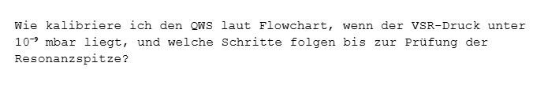
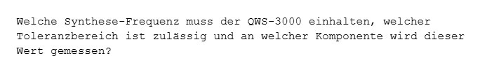

DeepEval 5x Summary
Durchschnitt pro Namespace
| run_id | collection | query_backend | iterations | evaluated_count_per_iteration | average_score | contextual_precision | contextual_recall | contextual_relevancy | elapsed_seconds_average | elapsed_seconds_total |
|---|---|---|---|---|---|---|---|---|---|---|
| deepeval_szenario_2_pfad_b_docling_hybrid | collection_pfad_b_gemini_embedding_2_szenario_2 | gemini | 5 | 18 | 0.6225 | 0.7963 | 0.8298 | 0.2415 | 142.5058 | 712.5292 |
Durchschnitt pro Test Case
| run_id | query_id | query_type | iterations | average_score | contextual_precision | contextual_recall | contextual_relevancy | retrieval_latency_seconds_average | query_text | query_image |
|---|---|---|---|---|---|---|---|---|---|---|
| deepeval_szenario_2_pfad_b_docling_hybrid | s2_aeronova_esg_tabelle_webinar | text | 5 | 0.3000 | 0.2500 | 0.4833 | 0.1667 | 0.0159 | Wie haben sich erneuerbare Energie, Arbeitsunfälle, Diversität und Wasserverbrauch bei AeroNova entwickelt, und wann ist das ESG Strategy Update 2026 angesetzt? | |
| deepeval_szenario_2_pfad_b_docling_hybrid | s2_aeronova_finanzkennzahlen_q4_b2b_ebitda | text | 5 | 0.7255 | 1.0000 | 1.0000 | 0.1765 | 0.0085 | Wie hoch waren der Gesamtumsatz und Aero-Freight-B2B-Umsatz in Q4 2025, und welche EBITDA-Marge wurde in Q3 2025 erreicht? | |
| deepeval_szenario_2_pfad_b_docling_hybrid | s2_aeronova_forschung_budget_balkendiagramm | text | 5 | 0.6978 | 1.0000 | 0.7867 | 0.3067 | 0.0066 | In welche Branche beziehungsweise F&E-Säule ging bei AeroNova der größte Anteil des Forschungsbudgets, und wie groß war dieser Anteil? | |
| deepeval_szenario_2_pfad_b_docling_hybrid | s2_aeronova_ion_drive_forschungskontext | text | 5 | 0.6717 | 0.8922 | 1.0000 | 0.1230 | 0.0235 | Welche F&E-Säule führte zur Einführung des Ion-Drive-Akkus, welchen Reichweitengewinn brachte er, und wie hoch war der zugehörige Budgetanteil? | |
| deepeval_szenario_2_pfad_b_docling_hybrid | s2_aeronova_marktanteile_2024_2025_vergleich | text | 5 | 0.6308 | 0.7833 | 1.0000 | 0.1091 | 0.0246 | Welche Marktanteile hatten Nordamerika und Lateinamerika jeweils in 2024 und 2025, und wie haben sich diese beiden Regionen verändert? | |
| deepeval_szenario_2_pfad_b_docling_hybrid | s2_aeronova_strategische_vision_2026 | text | 5 | 0.4111 | 0.9333 | 0.0667 | 0.2333 | 0.0062 | Welche drei strategischen Schwerpunkte verfolgt AeroNova für die Last-Mile-Evolution im Jahr 2026? | |
| deepeval_szenario_2_pfad_b_docling_hybrid | s2_noised_visual_qws_architektur_komponenten_abfolge | image_text | 5 | 0.7200 | 1.0000 | 1.0000 | 0.1600 | 0.0069 | Beantworte die Frage auf dem Bild |  tests/evals/image_queries/noised_qws_architektur_komponenten_abfolge.png |
| deepeval_szenario_2_pfad_b_docling_hybrid | s2_noised_visual_qws_flowchart_vakuum_resonanz_entscheidung | image_text | 5 | 0.9299 | 1.0000 | 1.0000 | 0.7897 | 0.0063 | Beantworte die Frage auf dem Bild |  tests/evals/image_queries/noised_qws_flowchart_vakuum_resonanz_entscheidung.png |
| deepeval_szenario_2_pfad_b_docling_hybrid | s2_noised_visual_qws_spezifikation_prc_toleranz | image_text | 5 | 0.6347 | 0.7333 | 0.9000 | 0.2708 | 0.0062 | Beantworte die Frage auf dem Bild |  tests/evals/image_queries/noised_qws_spezifikation_prc_toleranz.png |
| deepeval_szenario_2_pfad_b_docling_hybrid | s2_qws_architektur_komponenten_abfolge | text | 5 | 0.4363 | 0.8200 | 0.2000 | 0.2889 | 0.0094 | Aus welchen fünf Hauptphasen besteht die modulare Architektur des QWS-3000 und welche Rolle übernehmen PRC, IQM, Kryo-Sensor und NES-VSR im System? | |
| deepeval_szenario_2_pfad_b_docling_hybrid | s2_qws_fehler_e312_e404_vergleich | text | 5 | 0.7545 | 1.0000 | 1.0000 | 0.2636 | 0.0192 | Welche Maßnahmen sind bei einem E-312 Vakuum-Integrität Alarm nötig und wie unterscheiden sie sich von der Vorgehensweise bei einer E-404 Material-Handling Blockade? | |
| deepeval_szenario_2_pfad_b_docling_hybrid | s2_qws_fehler_e803_e921_diagnose | text | 5 | 0.7333 | 1.0000 | 1.0000 | 0.2000 | 0.0169 | Was muss ich prüfen, wenn der supraleitende Magnet Strom-Ripple meldet, und welche manuelle Prozedur ist bei verlorener QRC-Kopplung vorgesehen? | |
| deepeval_szenario_2_pfad_b_docling_hybrid | s2_qws_flowchart_vakuum_resonanz_entscheidung | text | 5 | 0.6667 | 1.0000 | 1.0000 | 0.0000 | 0.0060 | Wie kalibriere ich den QWS, wenn der VSR-Druck unter 10⁻⁹ mbar liegt, und welche Schritte folgen bis zur Prüfung der Resonanzspitze? | |
| deepeval_szenario_2_pfad_b_docling_hybrid | s2_qws_handgeschriebene_wartungstabelle_iqm_vsr | text | 5 | 0.3889 | 0.3667 | 0.7000 | 0.1000 | 0.0061 | Was gilt es bei der Wartung des HT-400 zu beachten und wer ist laut Wartungstabelle dafür verantwortlich? | |
| deepeval_szenario_2_pfad_b_docling_hybrid | s2_qws_spezifikation_prc_toleranz | text | 5 | 0.4278 | 0.2000 | 1.0000 | 0.0833 | 0.0112 | Welche Synthese-Frequenz muss der QWS-3000 einhalten, welcher Toleranzbereich ist zulässig und an welcher Komponente wird dieser Wert gemessen? | |
| deepeval_szenario_2_pfad_b_docling_hybrid | s2_visual_qws_architektur_komponenten_abfolge | image_text | 5 | 0.6483 | 1.0000 | 0.8000 | 0.1449 | 0.0062 | Beantworte die Frage auf dem Bild |  tests/evals/image_queries/qws_architektur_komponenten_abfolge.png |
| deepeval_szenario_2_pfad_b_docling_hybrid | s2_visual_qws_flowchart_vakuum_resonanz_entscheidung | image_text | 5 | 0.7931 | 0.9167 | 1.0000 | 0.4628 | 0.0082 | Beantworte die Frage auf dem Bild |  tests/evals/image_queries/qws_flowchart_vakuum_resonanz_entscheidung.png |
| deepeval_szenario_2_pfad_b_docling_hybrid | s2_visual_qws_spezifikation_prc_toleranz | image_text | 5 | 0.6352 | 0.4378 | 1.0000 | 0.4678 | 0.0178 | Beantworte die Frage auf dem Bild |  tests/evals/image_queries/qws_spezifikation_prc_toleranz.png |
{kind=link}
{kind=link}
Einzeldurchläufe
| run_id | iteration | average_score | contextual_precision | contextual_recall | contextual_relevancy | elapsed_seconds |
|---|---|---|---|---|---|---|
| deepeval_szenario_2_pfad_b_docling_hybrid | 1 | 0.6093 | 0.8056 | 0.7648 | 0.2576 | 0.0000 |
| deepeval_szenario_2_pfad_b_docling_hybrid | 2 | 0.6281 | 0.8269 | 0.8222 | 0.2352 | 0.0000 |
| deepeval_szenario_2_pfad_b_docling_hybrid | 3 | 0.6181 | 0.7827 | 0.8472 | 0.2243 | 0.0000 |
| deepeval_szenario_2_pfad_b_docling_hybrid | 4 | 0.6172 | 0.7812 | 0.8444 | 0.2259 | 414.7223 |
| deepeval_szenario_2_pfad_b_docling_hybrid | 5 | 0.6400 | 0.7852 | 0.8704 | 0.2646 | 297.8069 |